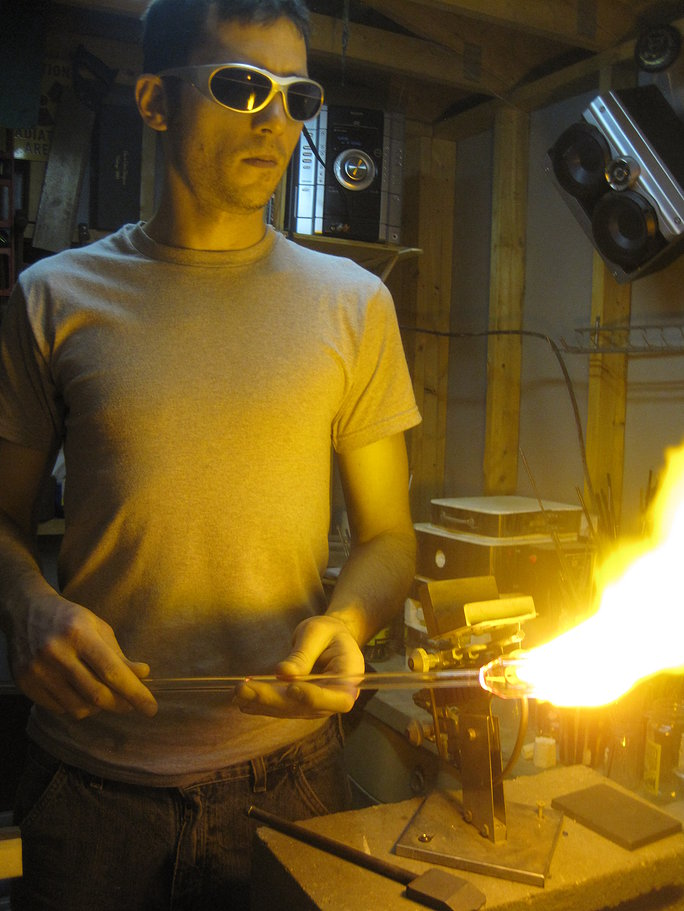

Matt Faulkner
Glass Blower
"Inspiring quotes fit in well when placed in About pages."
Matt has been creating since a young age, discovering lampworking at 18, he soon thought of little else. Throughout life he has focused on unique design and detail in his art. With a flare for the fantasy and sci fi perspective, he blends with a true to life design aspects.
He lives and works in Boone, NC in the Appalachain Mountains. He has been working with glass for over 10 years.